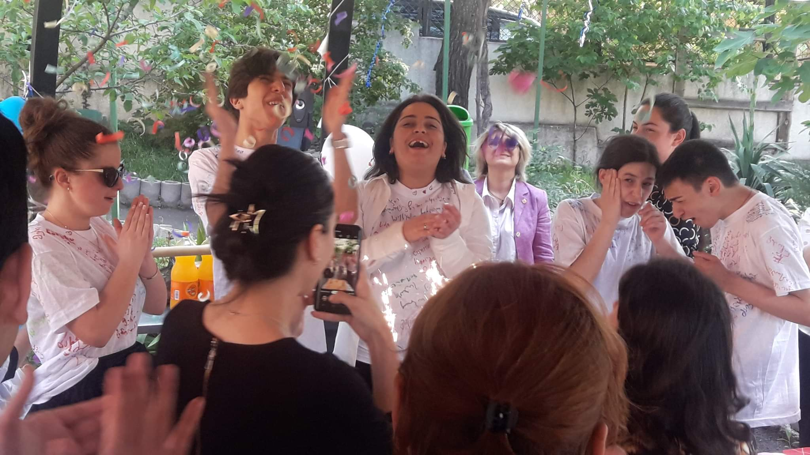
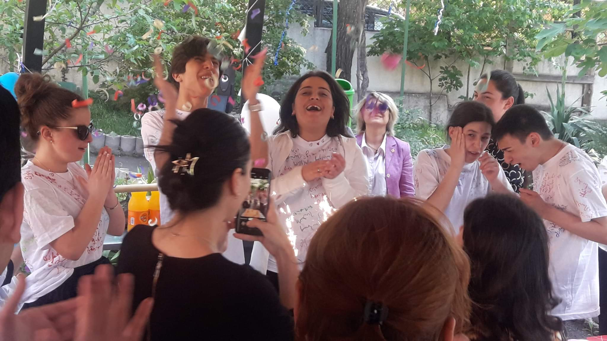

Дружба
Авторы: Саломе Кецбаиа,Теона Ахалаиа
Саломе: меня недавно выписали из больницы. Для того, чтобы наверстать упущенное время, я целыми днями болтала с друзьями и одноклассниками. В этих разговорах часто звучала одна фамилия. Ее я часто слышала и от других, упоминалась она исключительно в положительном контексте. Случилось так, что заочно я уже познакомилась с этой девочкой. Потом узнала номер и набрала ее.
Теона: как-то вечером зазвонил телефон. Помню крутилась на кухне, возилась с посудой. Звонил незнакомый номер, что меня немного смутило. Взяла трубку, чей-то голос сказал: «Здравствуйте, это Теона?». «Да, это я, а кто спрашивает, откуда у вас мой номер?». Женский голос ответил: «Хочу с тобой познакомиться». Мне это показалось странным, и тон был какой-то повелительный.
Саломе: и сегодня не могу понять, что меня заставило ей позвонить, но я это сделала, а она ответила. «Это Теона?», - «Да, это кто?». Она ответила вопросом на вопрос. Проявился ее буйный характер.
Теона: подумала, что снова произошла какая-то ссора и мне позвонили. Тогда я была очень конфликтной, не могла смириться с несправедливостью. Мы поговорили и оказалось, что у нас много общего. Выяснилось, что у нас много общих друзей. Саломе звонила каждый вечер. Тогда я еще не верила в новую дружбу. Я была разочарована, больше общалась с мальчиками. Саломе оказалась такой же, как я. Помню, как за 15 минут до ее звонка говорила с мамой о дружбе, школе, в основном жаловалась, мол «кажется рядом со мной никогда не будет человека, который станет больше, чем друг». Тогда мама сказала: «Не спеши, у всего свое время. Тебе обязательно повстречается человек, который станет всем. Просто нужно время, подожди». Именно в этот момент и зазвонил телефон, это была Саломе.
Саломе: «Мы не знакомы, но я хочу это исправить» - как только я произнесла эти слова, повисла долгая пауза. Я произносила их очень счастливой. Воспользовавшись паузой, я начала рассказывать все, что знала о ней. Поняла, что известно мне многое. Она поинтересовалась кто я и почему столько о ней знаю. Я кратко рассказала о себе, но слепоту сознательно утаила. Потом о чем-то пошутила. В конце разговора было такое чувство, что мы знакомы уже многие годы.
Теона: этот звонок все радикально ищменил в моей жизни.
Саломе: с тех пор мы вместе. Что касается личной встречи, то я, Теона и наш общий друг встретились 1-го сентября. Для меня Теона – драгоценность, больше, чем друг. Ее никто не сможет заменить.
<<<
Теона: здравствуйте, я Теона Ахалиа 20-ти лет, из Абхазии, Гали.
Саломе: здравствуйте, я Саломе Кецбаиа, 20-ти лет, из Абхазии, Гали.
Теона: помню, в то время я находилась под большим стрессом. Всегда хотелось, всегда мечталось иметь рядом такого человека… Я уже и не верила, что появится хороший друг. Винила себя, начала искать в себе проблему. Думаю, мне очень повезло найти Саломе.
<<<
{Прогулка по парку Киквидзе}
Саломе: наконец-то мы в парке Киквидзе, я и Теона, как обычно вместе.
Теона: я всегда мечтала здесь с тобой погулять.
Саломе: со мной?
Теона: да, когда звоню тебе вечерами, то представляю, что ты здесь, со мной. Здесь так спокойно, все успокаивает. Когда дует ветер так все красиво.
Саломе: ветра свист, ветра свист, ветра свист, листья мчит...обрывая кусты.
Теона: да, именно так.
Саломе: ряд деревьев сгибает в дугу, где же ты, где же ты, где же ты?
Теона: где ты, Саломе, где ты?
Саломе: ой, мне очень понравился светофор, который мы только что видели. Я очень люблю адаптированное пространство. То, где я не чувствую себя инопланетянином.
Теона: а так ты что, чувствуешь себя инопланетянином?
Саломе: иногда да. Например, когда поднимаюсь в автобус с палочкой, а пассажиры удивленно смотрят.
Теона: да, понимаю.
Саломе: как-то неприятно.
Теона: вот когда я тебе что-то описываю, как это обычно в твоем воображении?
Саломе: ну-ка, опиши, где мы сейчас.
Теона: здесь дорожки…
Саломе: дорожки?
Теона: да, дорожки соединяются друг с другом в центре. Посередине что-то стоит. Точно не знаю. Вот, ты упомянула инопланетянина, что-то похожее на их тарелку виднеется где-то там.
Саломе: (смеется) ага, свой.
Теона: вокруг очень чисто. Можно даже устроить пикник.
Саломе: вау!
Теона: ага, даже сейчас некоторые пришли на пикник. Парочки держатся за руки.
Саломе: слышу музыку вдалеке.
Теона: да, там детская развлекательная площадка.
Саломе: под открытым небом?
Теона: да, вот напротив нас еще что-то, кажется, работает. Как в Америке, когда дети приходят и занимаются, знаешь ведь?
Саломе: ааа, да. Мне рассказывали, что они приходят туда, усаживаются за компьютеры и занимаются. Открытое пространство, похожее на библиотеку.
Теона: да, и хороший обзор. Всегда хотела чего-то такого.
Саломе: за этим местом закрытые беседки и столы.
....
Саломе: я тебе не рассказывала? Был день незрячих, и мы устроили небольшую акцию. Мы, примерно до десяти человек, вышли к метро Авлабари и встали там с палочками в руках. В этот момент кто-то подходит и говорит: «Вах, вы спортсмены?». Ну ты же знаешь меня, я не выдержала и расхохоталась. Может он подумал, что мы лыжники, не знаю.
.....
Теона: Сало, как тебе понравилось мое описание?
Саломе: с учетом того, что ты впервые описала незнакомую обстановку, мне понравилось. Особенно понравился эпизод про плакучую. Очень понравился, но…
<<<
{Парк Киквидзе}
Теона: ой, не могу описать, не знаю точного названия.
Саломе: давай на русском.
Теона: и на русском не знаю.
Саломе: что это?
Теона: такие понурые деревья.
Саломе: ааа, плакучая ива? Оооо!
Теона: да, да, ива! Сейчас сфотографирую или сделаю селфи.
Саломе: какая ты высокая (смеется).
Теона: ты только сейчас почувствовала мой рост?
Саломе: да нет.
Теона: ой, знаешь, как сейчас красиво? Когда подул ветер, а ветки зашевелились.
Саломе: когда я впервые увидела дерево, ветви которого повисли вниз, то была потрясена. Потом мне сказали, что это плакучая ива. Люблю ее, знаешь?!
Теона: что она тебе напоминает?
Саломе: не знаю… Не могу сказать, что сравнила бы с собой, но в какие-то моменты очень люблю.
Теона: знаешь, что мне напоминает, вот когда… вот…
Саломе: да, особенно когда стоит у воды…
Теона: человеческую жизнь напоминает.
Саломе: знаешь какого человека? Очень замученного человека.
Теона: того, который все равно продолжает жить, не падает. Если и падает, то поднимается.
Саломе: да, да. Все равно продолжает жить.
<<<
Саломе: смотри, что важно в процессе описания… Есть незрячие, которые не видят с самого рождения, есть те, кто потерял зрение позже. Незрячие с рождения, например, могут поинтересоваться цветом, а могут и не поинтересоваться, если для них это не имеет значения. Если бы на этом дереве были цветы, например я, уточнила бы цвет каждого из них. Я такая. А так да, ты хорошо мне все описала. Особенно то, что люди смотрели на меня, как на «инопланетянина», мы часто это чувствуем.
<<<
{Парк Киквидзе}
Теона: ой, смотри как красиво!
Саломе: я видела, и знаешь, как видела? Это плачущее дерево стояло на пригорке.
Теона: стой, снимаю селфи…
<<<
Теона: когда мы гуляли по парку Киквидзе ты вспомнила один случай, когда на тебя и твою незрячую подругу смотрели, как на инопланетян. Я слышала и другие стереотипы о вас, например, что незрячие обладают особенным слухом.
Саломе: (смеется) да, я тоже много-много раз об этом слышала, это правда стереотип. Зрячий человек 70% информации воспринимает глазами, мозг незрячего в этом направлении попросту не напрягается. Он не получает информацию зрительно, его мозг полностью переключен на слух, однако, если проверить, у него точно такой же слух, как у зрячего. Просто его мозг не тратится на зрение. Поэтому и говорят, что раз не видит значит у него особенный слух. Это не так.
Теона: а что ты можешь сказать о том, что мол незрячие не могут передвигаться независимо?
Саломе: незрячему в Грузии сложно это делать, незрячие пользуются палочкой. Это просто, когда страна и город соответственно обустроены. На бордюре не должны встречаться автомобили и еще миллион осложняющих факторов.
Теона: как незрячие пользуются техникой?
Саломе: этому тоже часто удивляются. Мы используем специальные звуковые программы, которые все озвучивают. Мы читаем книги, пользуемся социальными сетями. Вообще это программа во многом помогает.
Теона: как незрячие получают образование?
Саломе: в Тбилиси находится единственная в Грузии школа-пансион для незрячих, где мы получаем образование. Я тоже закончила ее. Там меня научили шрифту Брайля. Сначала он показался очень сложным, но оказалось не так… В более высоких классах шрифт Брайля замещает техника, т.к. сейчас компьютерная эпоха обучение продолжается посредством специальной «читающей» программы. В телефоне и компьютере мы делаем все то же, что и зрячие.
Теона: мне сложно представить, что незрячие могут жить независимо, это так?
Саломе: да, если честно. До того, как потерять зрение жизнь незрячих мне тоже казалась тяжелой. Это не так… Мы можем и еду приготовить, и прибраться, и перемещаться. Просто государство должно позаботиться о том, чтобы такая возможность была. А так незрячие вполне могут жить независимо. Я слышала много стереотипов, но мне интересней сталкивалась ли ты, как человек, который дружит с незрячим, с какими-нибудь стереотипами?
Теона: да, много раз. Прямо не говорили, но я чувствовала. Говорили, наверное, дружит, потому что жалеет. Не понимаю, как можно дружить из-за чего-то… Сложно представить.
Саломе: вот видишь, тому причиной недостаточная информированность общества о незрячих. Им реально немного непонятно и невероятно, что незрячий может жить независимо, получать образование и т.д. Незрячие вовсе не нуждаются исключительно в помощи. Нет! Незрячие – обычные люди.
Теона: невозможно дружить из жалости. Лично я не смогла бы этого сделать. Ты та же, с кем я познакомилась. Мы дружим не из-за того, что ты не видишь. Для меня ты совершенно обычный человек.
Саломе: в этом нет ничего особенного, я могу понять и тех людей, у них нет информации. Осведомленность низкая. Многие люди с ограниченными возможностями здоровья покоряют вершины, которые зрячим могут оказаться не по плечу.
<<<
{Парк Киквидзе… Издалека слышится музыка}
Саломе: видишь, этот концерт провели из-за того, что я пришла.
Теона: да, тебе повезло… Идем, посмотрим, я опишу… я же твои глаза все-таки.
Саломе: сегодня ты мои глаза.
Теона: уже началось… ах, здесь ограждение. Пошли снова к иве.
Саломе: кажется на грузинском «тирипи», если я не ошибаюсь.
Теона: да, плакучая.
<<<
Саломе: Теона, мы с тобой делим на два тела одну душу.
Теона: говорят, дружба – это одна душа в двух людях, а друг – человек, который понимает тебя в горе и радости без слов. Именно тот, который с тобой и в радости, а не только в горести.
Саломе: люди, всем сердцем желаю вам иметь рядом такого человека, каким для меня является Теона и каким для нее являюсь я.


 
